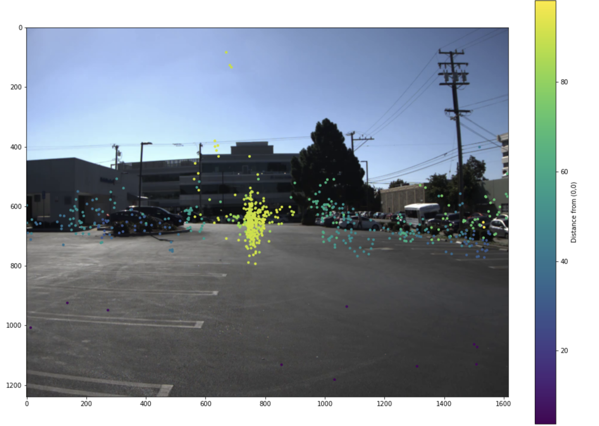
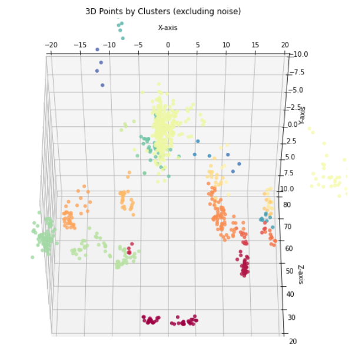

REVOLUTIONIZING AUTONOMOUS DRIVING SOFTWARE FOR SAFER OBJECT DETECTION
Welcome to the project website! This project focuses on improving object detection and localization using radar and image data in complex environments. Here, you can explore the various aspects of our end-to-end pipeline, including coordinate transformation, YOLO object detection, DBSCAN clustering, and merging radar clusters with image labels.

Overview
Our end-to-end pipeline integrates data from radar and image sensors to enhance the accuracy of object detection and localization. The pipeline consists of the following main steps:
- Coordinate Transformation
- YOLO Object Detection
- DBSCAN Clustering
- Merging Radar Clusters and Image Labels
For more details about each step, please see the sections below.
Pipeline
1. Coordinate Transformation
Coordinate transformation involves converting radar data from its native coordinate system (radar space) to a coordinate system that is aligned with the camera data (camera space). This process allows for the integration of information from multiple sensors to improve the accuracy of object detection and localization in complex environments.
2. YOLO Object Detection
YOLO (You Only Look Once) is a real-time object detection algorithm. It leverages a single neural network to simultaneously predict object classes and bounding boxes for those objects in input images. The algorithm is trained using a large dataset of labeled images and backpropagation to update the weights of the neural network.

3. DBSCAN Clustering
DBSCAN (Density-Based Spatial Clustering of Applications with Noise) is a clustering algorithm used for unsupervised machine learning. It groups together data points that are close to each other in feature space and separates data points that are far away. The algorithm identifies clusters based on their distance from each other and recursively adds nearby points that meet the epsilon and minimum points criteria until no more points can be added to the cluster.
Image placeholder for DBSCAN clustering results:
4. Merging Radar Clusters and Image Labels
The final step of the pipeline is to combine the results generated by the clustering and labeling algorithm. Radar point data clusters obtained from the DBSCAN algorithm are merged with object labels generated by the YOLO algorithm for the image data. This combination is accomplished by utilizing the overlapping bounding boxes between the radar points and image labels as a means of matching the results.